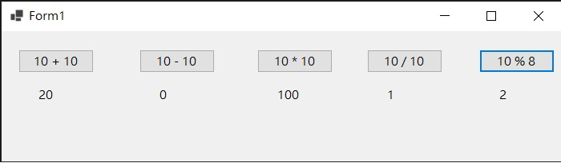
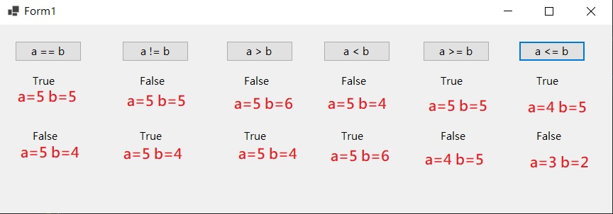

本章節會介紹C#常使用到的資料型別和變數
在C#中，使用變數前都需要先進行資料型別的宣告，否則電腦會看不懂你要使用什麼資料型別，進而產生錯誤
以下將舉例最常用到的資料型別、資料型別大小範圍、如何使用。如需更詳細的內容，可參閱網頁上方的"文件參考"
使用資料型別時，請注意英文大小寫，須完全符合才行
| 資料型別 | 範圍 | 範例 |
|---|---|---|
| bool | True、False | bool varName = true; |
| int | -2,147,483,648 ~ +2,417,483,647 | int varName = 123; |
| float | ±1.5 x 10-45 ~ ±3.4 x 1038 | float varName = 123.45F; |
| char | 0 ~ 65,535 |
char varName = 'A'; char varName = 'a'; 注意:單引號 |
| string | - |
string varName = "Test"; string varName = "Test" + "測試"; 注意:雙引號 |
| double | ±5.0 × 10−324 ~ ±1.7 × 10 308 | double varName = 1.0d; |
*varName為變數名稱，可以自行定義但不可使用關鍵字、數字開頭、特殊符號(除了_ @)
這部分，介紹數學運算式
| 符號 | 意義 | 如何使用 |
|---|---|---|
| + | 相加運算子 | i = j + k |
| - | 相減運算子 | i = j - k |
| * | 相乘運算子 | i = j * k |
| / | 相除運算子 | i = j / k |
| % | 取餘數運算子 | i = j % k |
範例，Button按鈕為該運算式，Label標籤為結果
完整程式碼：
這部分，介紹關係運算子。
| 符號 | 意義 | 如何使用 |
|---|---|---|
| == | 相等 | a == b |
| != | 不相等 | a != b |
| > | 大於 | a > b |
| < | 小於 | a < b |
| >= | 大於或等於 | a >= b |
| <= | 小於或等於 | a <= b |
範例，此部份大多用於判斷True、False，所以以下範例以Bool判斷為主
| 符號 | 意義 | 運算式 | 解釋 |
|---|---|---|---|
| & | 且AND | a & b | 如果a和b的值皆為True，則結果顯示True 如果不是皆為True，則結果顯示False |
| && | 且AND | a && b | 如果a和b的值皆為True，則結果顯示True，否則結果顯示False 如果a判斷後是False，則不會去判斷b |
| | | 或OR | a | b | 如果a和b的其中一值為True，則結果顯示True，否則結果顯示False |
| || | 或OR | a || b | 先比較a的值，如果a的值為True 就不會去判斷b是否為True，直接結果顯示True |
| ! | 反向 | !a | 顯示結果為相反的值。例如a傳回True，結果顯示會是False |